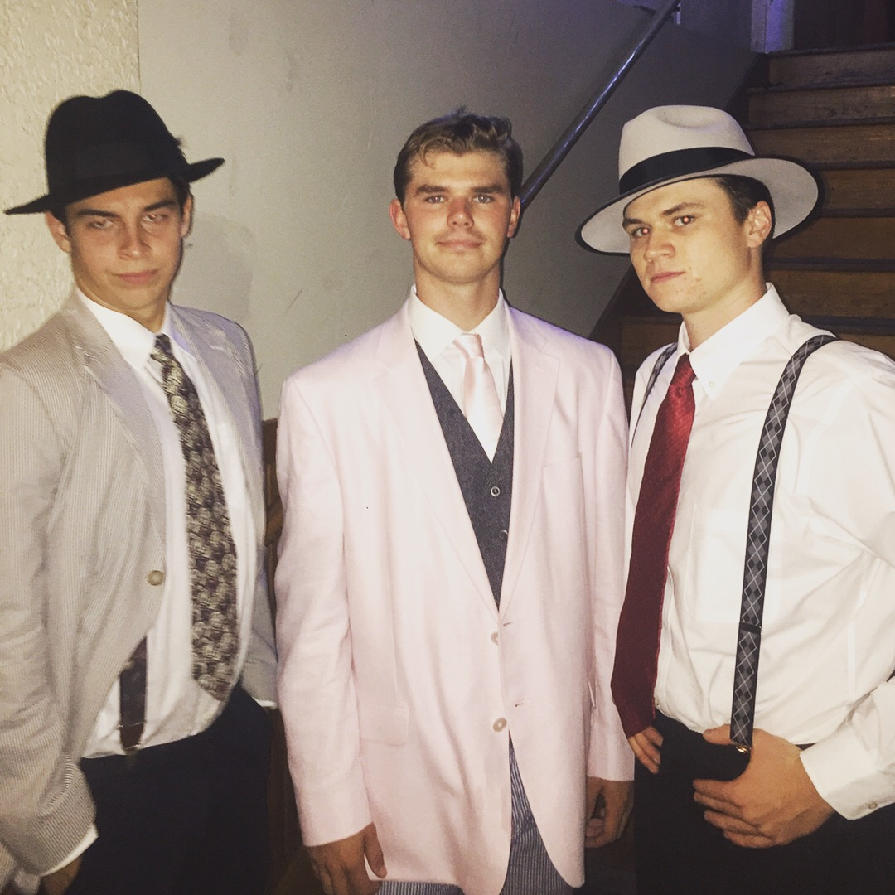
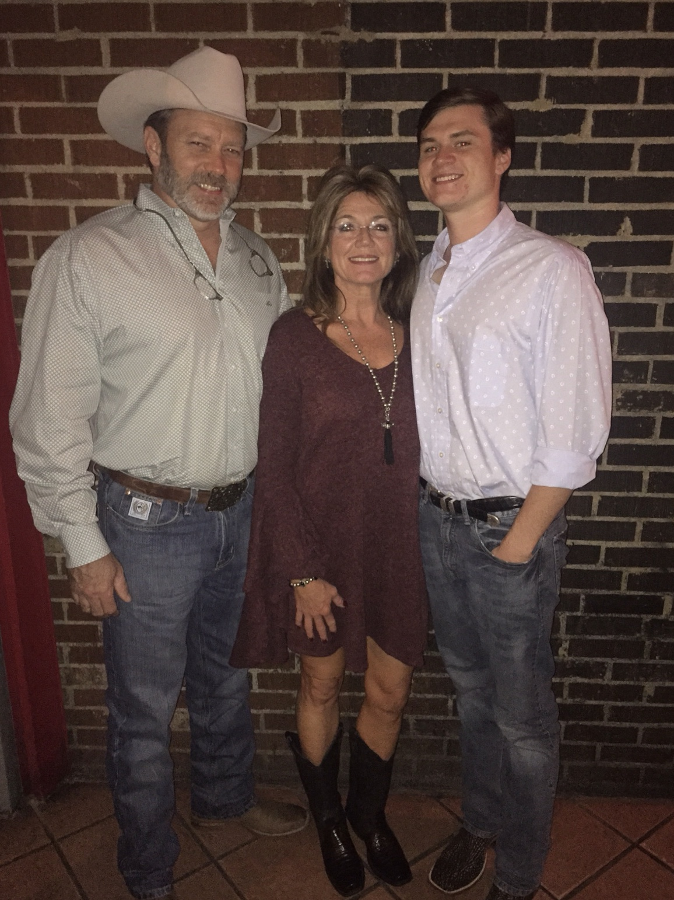
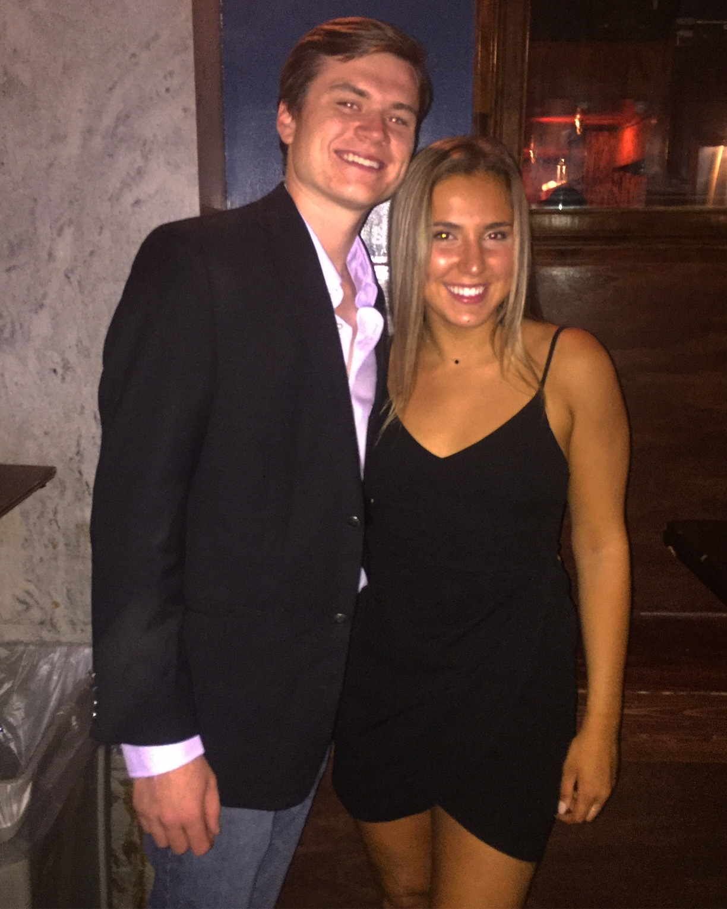

 - Me and my friends on the 1920's social  - Me and my parents  - Me and my semi-formal date
My name is Cord Sanford. I am a Sophomore at UGA intending to major in Management and Political Science. My hometown is Gainesville, Georgia where I attended North Hall High School. I have two younger siblings, a brother named Cutter (17), and a sister named Lyric (14). My parents names are Jeff and Lisa and we also have a family dog named Copper. I hope you enjoy my webpage!
I have always been a fan of the outdoors almost all of my hobbies include being outside. I have played golf since I was in middle school and thoroughly enjoy the sport, but my heart belongs to hunting and fishing. I've enjoyed activities in nature since I was a small child and still crave being in the woods to this day. My final hobby that doesn't necessarily have to do with the outdoors is playing guitar. My parents bought me my first guitar when I was 13 years old and I've been hooked ever since.
Future Plans As of right now I am still unsure what career path I would like to take. I have changed my major a few times trying to search for the right one for me but still haven't been completely satisfied in my path. I'm sure that one day I will figure out a plan, but until then I'm just going to keep living my life to the fullest.